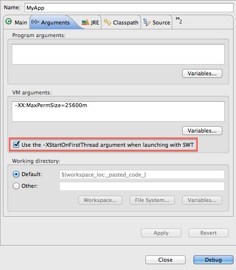

Here are some of the more noteworthy things available in milestone build M3
(November 2, 2012) which is now available for download.
| Platform |
[ Not available yet ] |
| Resources
|
[ Not available yet ] |
| SWT
|
[ Not available yet ] |
| Platform UI
|
[ Not available yet ] |
| User Assistance
|
[ Not available yet ] |
| Platform Text
|
[ Not available yet ] |
| Team/CVS
|
[ Not available yet ] |
| Compare
|
[ Not available yet ] |
| Ant
|
[ Not available yet ] |
| Debug
|
| Option to omit -XStartOnFirstThread |
If you are launching an SWT program on Mac OS X, you can now selectively add / remove the -XStartOnFirstThread VM argument
in the event your VM does not support it. This option can be configured per launch configuration and is available on the standard Arguments
tab for Java configurations (Java Application, Eclipse, etc.).

|
| Global preference to include exported entries during launching |
A new global preference has been added so you can only allow exported classpath entries to be used during launching. Previously, this
was only customizable per launch configuration on the default classpath entry on the Java Classpath tab. The new preference does not affect
launch configuration data, so no migration is needed.
The new preference can be found on the Java > Debug preference page.

|
| Launch configuration dialog can show warnings |
Previously, contributors could only set an 'ok' or an 'error' state in their launch configuration tags / groups. Now,
contributors can set a warning state with a message for their tabs / groups - possibly warning users about set options
that might be problematic, but do not necessarily need to prevent launching.

|
[ Not available yet ] |
| JDT |
| Javadoc view resolves enclosing method call and keeps last target |
The Javadoc and Declaration views now try to find the enclosing method call
if the selection or caret position doesn't resolve to a valid Java element.

Furthermore, they keep the last resolved target element even if no new target can be resolved.
|
| Detection of unused type parameters |
The compiler can now detect unused type parameters:

The Unused type parameter diagnostic is set to Ignore by default and can be enabled on the
Java > Compiler > Errors/Warnings
preference page.
|
| Option to omit @Override for interface methods |
Eclipse can add @Override annotations for overriding methods:

If your code uses Java 1.6 or higher, the @Override annotation is also added to
methods that override an interface method. If you don't want to use @Override
in this case, then follow the link and disable the corresponding compiler option:

You may also want to enable the diagnostic for Missing '@Override' annotation.
|
| PDE |
| Javadoc hover available in plug-in manifest editor |
When editing the plugin.xml or manifest.mf files using the Plug-in Manifest Editor,
opening content assist for type proposals will now display additional javadoc information.

|
| Plug-in image browser view |
A new view has been added to PDE. The Plug-in Image Browser view displays icons and other
images from your target platform, running application or current workspace.
When an image is selected, additional information is displayed at the bottom of the view. The
reference text can be used in plug-in extensions to refer to images in other bundles.

|
| Launch configurations choose default execution environment |
New PDE launch configurations (Eclipse Application, JUnit Plug-in Test, OSGi Framework) will
use a default execution environment to determine which Java runtime environment to launch with.
The launch configuration can be changed to use a different execution environment or a specific
JRE on the Main tab.
To find a valid execution environment, all known environments are checked against each bundle
or plug-in that will be launched. Only an execution environment that is valid for all
plug-ins and bundles will be selected. If no valid environment is found, a default JRE
will be chosen as before.

The JRE associated with the selected execution environment will be used to launch. To change
which JRE is associated with an execution environment, use the Preferences > Java > Installed JREs >
Execution Environments preference page.
|
| PDE UI requires a 1.5 EE |
The bundle required execution environment for the PDE UI bundles org.eclipse.pde.core and
org.eclipse.pde.ui is now J2SE-1.5.
|
| Equinox |
[ Not available yet ] |
| Template
|
| First item |
Item blurb.
|
| |
The above features are just the ones that are new since the previous milestone
build. Summaries for earlier Kepler milestone builds: